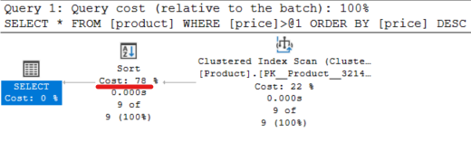

Közös feladatok¶
BEADANDÓ
A feladatok megoldása során dokumentáld a README.md markdown fájlba:
- a használt SQL utasítást (amennyiben ezt a feladat szövege kérte),
- a lekérdezési tervről készített képet (csak a tervet, ne az egész képernyőt),
- és a lekérdezési terv magyarázatát: mit látunk és miért.
Annak ellenére, hogy a megoldások megtalálhatóak alább, az SQL utasítások kiadása, a lekérdezési terv képernyőkép elkészítése és a magyarázattal együtt való dokumentálás szükséges része a feladatnak.
Amennyiben egyes (rész)feladatok lekérdezési terve és/vagy a magyarázat azonos, vagy legalábbis nagyon hasonló, elég egyszer elkészíteni a lekérdezési tervről a képet, és a magyarázatot is elég egyszer megadni, csak jelezd, hogy ez mely feladatokra vonatkozik.
Feladat 1 (2p)¶
Dobd el a CustomerSite => Customer idegen kulcsot és a Customer elsődleges kulcs kényszerét. Legegyszerűbb, ha az Object Explorer-ben megkeresed ezeket, és törlöd (a PK... kezdetűek az elsődleges kulcsok, az FK... kezdetűek a külső kulcsok - két külön táblában kell keresd a törlendőket!):

Vizsgáld meg a következő lekérdezések végrehajtási tervét a Customer táblán – mindig teljes rekordot kérjünk vissza (select *):
- a) teljes tábla lekérdezése
- b) egy rekord lekérdezése elsődleges kulcs alapján
- c) olyan rekordok lekérdezése, ahol az elsődleges kulcs értéke nem egy konstans érték (használd a
<>összehasonlító operátort) - d) olyan rekordok lekérdezése, ahol az elsődleges kulcs értéke nagyobb, mint egy konstans érték
- e) olyan rekordok lekérdezése, ahol az elsődleges kulcs értéke nagyobb, mint egy konstans érték, ID szerint csökkenő sorrendbe rendezve
Add meg a használt SQL utasításokat, majd vizsgáld meg a lekérdezési terveket, és adj magyarázatot rájuk!
Megoldás
A kiadott parancsok:
- a)
select * from customer - b)
select * from customer where id = 1 - c)
select * from customer where id <> 1 - d)
select * from customer where id > 1 - e)
select * from customer where id > 1 order by id desc
a)-d)
A lekérdezési terv mindegyikre nagyon hasonló, mindegyik table scan-t használt:

Magyarázat: az optimalizáló nem tud indexet használni, így minden lekérdezés table scan lesz.
e)
Egyedül ez különbözik, az order by miatt még egy sort is lesz benne.

Magyarázat: A table scan marad, és még rendezni is kell, amihez nincs index segítség, tehát külön lépés lesz.
Feladat 2 (2p)¶
Hozd létre újra az elsődleges kulcsot a Customer táblán:
- Job kattintás a táblán > Design > az ID oszlopon "Set Primary Key " és Mentés gomb,
- vagy az
ALTER TABLE [dbo].[Customer] ADD PRIMARY KEY CLUSTERED ([ID] ASC)SQL utasítás lefuttatása.
Futtasd újra az előbbi lekérdezéseket. Mit tapasztalsz?
Megoldás
A kiadott parancsok megegyeznek az 1.-es feladattal.
a)

Clustered Index Scan végigmegy a clustered index mentén. Az elsődleges kulcs hatására létrejött egy Clustered Index, azaz innentől a tábla rekordjai ID szerinti sorrendben vannak tárolva. Ha végigmegyünk ezen a struktúrán meglesz az összes sor. Ha van clustered index, már nem fogunk Table Scan-nel találkozni, legrosszabb esetben teljes Clustered Index Scan lesz. Attól, hogy nem Table Scan a neve, a teljes Clustered Index Scan is valójában egy table scan, a teljes tábla adattartalmát felolvassuk. Általános esetben ez probléma, de itt épp ezt kértük a lekérdezésben.
b)

Ez egy Clustered Index Seek lesz. Mivel a rendezési kulcsra fogalmazunk meg egyezési feltételt, a rendezett tárolású rekordok közül nagyon gyorsan eljuthatunk a keresetthez. Ez egy jó terv, a Clustered Index egyik alapfeladata a rekord gyors megtalálása, erre van optimalizálva.
c)
Az előzőhöz nagyon hasonló a terv: ez is Clustered Index Seek lesz két intervallummal (< konstans, > konstans). Az optimalizáló két intervallumra bontja a <>-t. Mivel a feltétel a rendezési kulcsra vonatkozik, megint ki tudja használni a Clustered Indexet. Ez is egy jó terv, a rendezés miatt csak a szükséges rekordokat fogjuk felolvasni.
d)
Ez is Clustered Index Seek alapú range scan lesz egy intervallummal. Az előbbihez nagyon hasonló.
e)

Ismét Clustered Index Seek backward seek order-rel. Megnézhetjük a Properties ablakban a range-et és a Seek Order-t: kikeressük a határon lévő rekordot és onnan visszafelé indulunk el, így eleve rendezve lesz az eredményhalmaz. Ez egy jó terv, a rendezés miatt csak a szükséges rekordokat fogjuk felolvasni és pont a megfelelő sorrendben.
Feladat 3 (2p)¶
Futtasd az alábbi lekérdezéseket a Product táblán megfogalmazva.
- f) teljes tábla lekérdezése
- g) egyenlőség alapú keresés a
Priceoszlopra - h) olyan rekordok lekérdezése, ahol a
Priceértéke nem egy konstans érték (<>) - i) olyan rekordok lekérdezése, ahol a
Priceértéke nagyobb, mint egy konstans érték - j) olyan rekordok lekérdezése, ahol a
Priceértéke nagyobb, mint egy konstans érték,Priceszerint csökkenő sorrendbe rendezve
Add meg a használt SQL utasításokat, majd vizsgáld meg a lekérdezési terveket, és adj magyarázatot rájuk!
Megoldás
A kiadott parancsok:
- f)
select * from product - g)
select * from product where price = 800 - h)
select * from product where price <> 800 - i)
select * from product where price > 800 - j)
select * from product where price > 800 order by price desc
f)-i)

Clustered Index Scan végigmegy a clustered index mentén. Ez továbbra is a teljes tábla felolvasása, hiszen a szűrésre nincs index. Ha van szűrési feltétel, minden soron végig kell menni és ki kell értékelni a feltételt. Mivel van Clusterd Index, így amentén haladunk, de nem sokra megyünk ezzel, lényegében egy Table Scan. Ezek nem hatékony lekérdezések. Mivel nem a Clustered Index rendezési kulcsra fogalmaztuk meg a feltételt, így az index nem sokat segít nekünk (ezért lesz Scan és nem Seek).
j)

Ez is Clustered Index Scan lesz, de ami az érdekes, hogy a rendezés költsége jelentős (nagyobb mint a kikeresésé). Miután az elég költséges Index Scan-t megcsináltuk, még rendeznünk is kell, hiszen a kiolvasott rekordok ID szerint sorrendezettek nem Price szerint. Ez a lekérdezés nagyon költséges, az amúgy is drága scan után még rendezni is kell. A jó index nem csak a keresést segíti - de most nincs megfelelő indexünk.
Feladat 4 (2p)¶
Vegyél fel indexet a Price oszlopra. Hogyan változnak az előbbi lekérdezések végrehajtási tervei?
Az index felvételéhez használd az Object Explorer-t, a fában a táblát kibontva az Indexes-en jobbklikk -> New index > Non-Clustered Index...

Adj az indexeknek értelmes, egységes konvenció szerinti nevet, pl. IX_Tablanev_MezoNev. Add a Price oszlopot az Index key columns listához.

Ismételd meg az előbbi lekérdezéseket, és értelmezd a terveket!
Megoldás
A parancsok megegyeznek az előző feladatéval.
f)
Hiába az új index, ez még mindíg Index Scan lesz - hiszen a teljes tábla tartalmát kértük.
g)-i)
Clustered Index Scan lesz, lényegében megegyezik a szűréshez elvileg használható index nélküli esettel.
Miért nem használja az új indexünket? A nem túl nyilvánvaló ok a projekcióban rejlik, azaz, hogy teljes rekordokat kérünk vissza. Az NonClustered Index-ből csak egy halom rekordreferenciát kapnánk, amik alapján még utána fel kellene olvasni a szükséges rekordokat. Az optimalizáló – főleg kis táblák esetén- dönthet úgy, hogy ennek összköltsége nagyobb lenne, mint egy index scan-nek.
j)

A NonClustered Index Seek-ből kikeresett megfelelő kulcsoknak megfelelő rekordokat kikeressük a Clustered Index-ből. Lényegében egy join a két index között.
A többi lekérdezésnél is valami ilyet vártunk volna. A Clustered Index-re szükség van, mert teljes rekordokat kérünk vissza, a NonClustered Index csak referenciákat ad. A referenciák sorrendben vannak, így ha ezekhez rendre kigyűjtjük a teljes rekordokat a Clustered Index-ből akkor megspóroljuk az utólagos rendezést. Ha csak a Clustered Index-et használnánk (teljes Clustered Index Scan), akkor kellene utólagos rendezés. Ez egy elfogadható terv, mert a NonClustered Index segítségével megúsztuk a külön rendezést.
Feladat 5 (2p)¶
Szaporítsd meg a Product tábla sorait az alábbi SQL szkripttel. Hogyan változnak az előbbi végrehajtási tervek?
Az i) típusú lekérdezést próbáld ki úgy is, hogy a választott konstans miatt kicsi legyen az eredményhalmaz, és úgy is, hogy lényegében a teljes tábla benne legyen. Adj magyarázatot is a változásokra.
SELECT TOP (1000000) n = ABS(CHECKSUM(NEWID()))
INTO dbo.Numbers
FROM sys.all_objects AS s1 CROSS JOIN sys.all_objects AS s2
OPTION (MAXDOP 1);
CREATE CLUSTERED INDEX n ON dbo.Numbers(n)
;
INSERT INTO Product(Name, Price, Stock, VATID, CategoryID)
SELECT 'Apple', n%50000, n%100, 3, 13
FROM Numbers
Megoldás
A parancsok megegyeznek a korábbiakkal.
f)
Megegyezik az előző feladattal.
g)

A NonClustered Index Seek-ből kikeresett kulcsoknak megfelelő rekordokat kikeressük a Clustered Index-ből. Lényegében egy join a két index között.
Vessük össze az előző, kis táblás változattal. Miért nem használja most a Clustered Index Scan-t? Nagy tábláknál megnő a szelektivitás szerepe és jelentős a NonClustered Index használatából fakadó előny. A Clustered Index Scan nagy méretnél nagyon drága, ha van esély rá, hogy az NonClustered Index használatával csökkenthető a felolvasható sorok száma, akkor szinte biztosan érdemes használni. A Price statisztikái alapján tudható, hogy az = operátor jól szűr. Fontos! Az = használatából még nem következik a jó szűrés, ha szinte minden sorban ugyanaz az érték van, akkor pl. nem fog jól szűrni - ezért kell a statisztika is!
Ez a terv elfogadható. Ha a feltételünk jól szűr, akkor tényleg ez lehet a jó irány.
h)

Clustered Index Scan végigmegy a clustered index mentén, megegyezik a korábban látottakkal.
Miért nem használjuk az előző módszert? Ha az = ezen tábla esetében jól szűrt, akkor a <> nem fog. Ha ezt tudja a statisztikák alapján az optimalizáló, akkor összességében nem éri meg trükközni, úgyis fel kell olvasni a teljes táblát.
i)
Attól függ, hogy milyen konstanst választunk. Ha nagyon jól szűr (pl. nagyon nagy szám a konstans), akkor a g)-nél, ha nem akkor a h)-nál látott módszert követi.
j)
Mint a g) esetében. Számít itt az order by desc? Az optimalizáló megpróbálja elkerülni a rendezést, azt pedig csak ezzel a módszerrel tudja. Ez egy elfogadható terv. Az NonClustered Index segítségével itt is megúsztuk a rendezést.